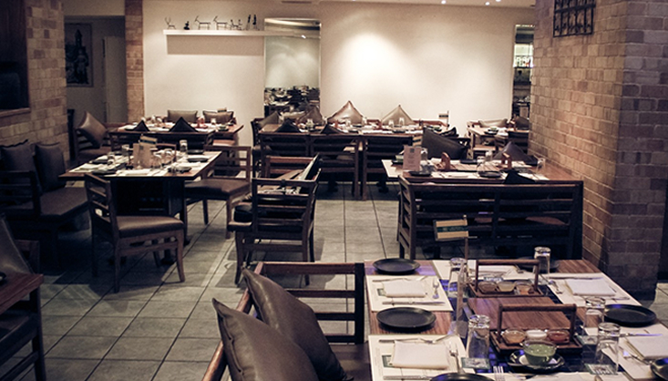

ABOUT US
Newfangled restaurant is committed to provide the best in traditional Indian recipes in a modern style. We have specialized in South Indian dishes in general and Andhra recipes in particular. Apart from food, a variety of hot beverages are also available for you to choose from. As a customer focused entity, we would always be listening to what our customers say. We understand that feedbacks from our customers are the best way to improve. Please use the contact form to pen down your comments.
Newfangled Restaurant proudly follows the tradition of Indian cuisine. The uniqueness and diversity of our recipes with their distinctive flavors and aroma enthrall the hearts of world’s epicures. At our restaurant, we aim to present a minute sample of this extensive compilation of recipes for your gourmet appraisal. The eclectic menu has been appreciated by everyone from connoisseurs of Indian cuisine to someone trying the flavors from Andhra for the first time. The service, value and taste have been praised very highly by critics.
Established in March 2015, this is the first restaurant under the Indian brand name that serves delicious Indian delicacies. Located near IOC Petrol Bunk in BTM Layout, Bangalore, India. We deliver, offer pick up and also cater to parties and special occasions.
You’ll be satisfied by our range of fresh breads, vegetarian and non – vegetarian options like nowhere else in the city. Have lunch with us, bring your date, or get any dish on the menu for takeaway. If you’re in too much of a rush, we’ll bring the meal to you with our always free, online order delivery, from lunch to dinner.
